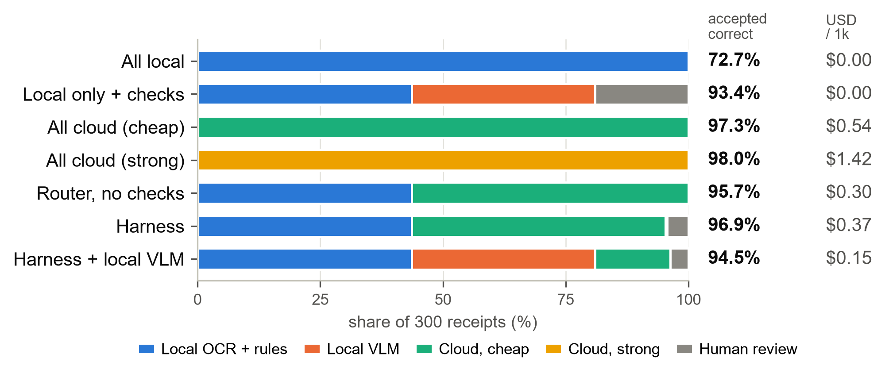

LLM reads, code verifies
From production (a private expense platform)
- Rolled back confidence-based auto-approval: why this harness exists
- 90%+ less reconciliation time · sole engineer · 729 PRs
- 7 LLMs benchmarked on a hand-built 90-receipt, 8-currency set
- 87 s → 10 s worst-case latency with Gemini → Claude failover
1Can you trust what an LLM reads?
Not its confidence. Check every answer with code.
| Adversarial set (cloud, cheap) | n | model fooled | as expected | leaked |
|---|---|---|---|---|
| Date traps | [n] | [f] | [c] | [l] |
| Arithmetic traps | [n] | [f] | [c] | [l] |
| Injection, blatant | [n] | [f] | [c] | [l] |
| Injection, disguised | [n] | [f] | [c] | [l] |
| Controls | [n] | [f] | [c] | [l] |
2When should it call the cloud?
Local first, cloud when the checks fail, people last.
| Each reader alone | scans: date + total | phone photos | median |
|---|---|---|---|
| Local OCR + rules | {{aT1}} | {{wT1}} | {{msT1}} s |
| Local VLM 3B | {{aT2}} | {{wT2}} | {{msT2}} s |
| Cloud, cheap | {{aT3}} | {{wT3}} | {{msT3}} s |
| Cloud, strong | {{aT4}} | {{wT4}} | {{msT4}} s |

Harness (router + 4 checks): within {{cloud_gap}} points of all-cloud at {{cost_cut}} lower cost, and {{t1i}} of receipts never leave the machine. {{precA}} correct, {{revA}} to people, ${{costA}} per 1,000 (all cloud {{aT3}}, ${{cT3}}). At 2026-10 prices the strong model adds {{strong_gain}} points for {{strong_ratio}}× the price: escalate to people, not to a bigger model.

A router that knew the answers would send only {{oracle_cloudi}} to the cloud for {{oracle_prec}}; the router (agree + confidence rule, no checks) sends {{router_cloudi}} for {{router_prec}}. The hard part is knowing when to call the cloud, not the model. A learned “call the cloud?” score ({{n_features}} features, out-of-fold AUC {{auc}}) was no better than the router, so the rule stayed.
3What if the data can't leave?
Run local-only: same checks, more human review.
| Cloud mode | Local only | |
|---|---|---|
| Scans: correct | {{precA}} | {{precB}} |
| Scans: to people | {{revA}} | {{revB}} |
| Scans: USD per 1k, people time not priced | ${{costA}} | $0 |
| Photos: correct | {{wA}} | {{wB}} |
| Photos: to people | {{wArev}} | {{wBrev}} |
Photos: same accuracy, more review; scans: {{scan_gap}} points lower. Keeping data in costs mostly people's time. Only the cloud readers (T3, T4) see the image; checks and routing stay local.
Check rules are per domain: a check tuned on scan errors caught {{d_caught}} of {{leak_other}} on scans, but {{d_wild_caught_rcpt}} receipt on held-out photos, with {{d_wild_false_rcpt}} false alarm.
Next: 10k receipts; invoices and statements; layout features for the hand-off decision; a weekly drift metric.